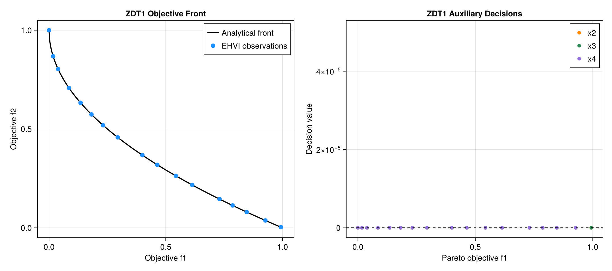
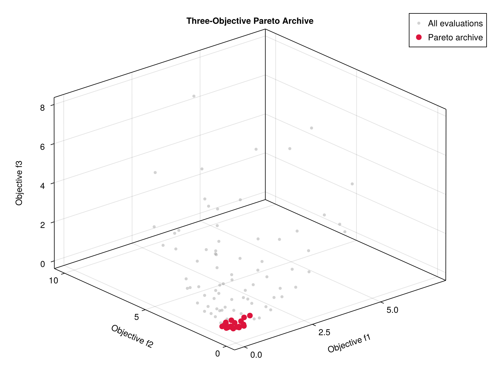

Examples
All examples are executable from the repository root.
Schaffer N.1
julia --project=. examples/schaffer_serial.jlThis one-dimensional problem has a continuous analytical Pareto set and is the quickest way to inspect the API.
ZDT1
julia --project=. examples/zdt1_serial.jlZDT1 tests whether the optimizer can discover the hidden decision manifold x2=x3=x4=0 while covering a nonlinear objective front.

Mixed objective directions
julia --project=. examples/mixed_senses_serial.jlThis example minimizes cost while maximizing quality.
Three objectives under MPI
$HOME/.julia/bin/mpiexecjl -n 5 \
julia --project=. examples/three_objectives_mpi.jl
Expensive simulation template
$HOME/.julia/bin/mpiexecjl -n 9 \
julia --project=. examples/expensive_simulation_mpi.jlThe template creates a worker-specific directory, evaluates one simulation, and extracts three objective values from its output.